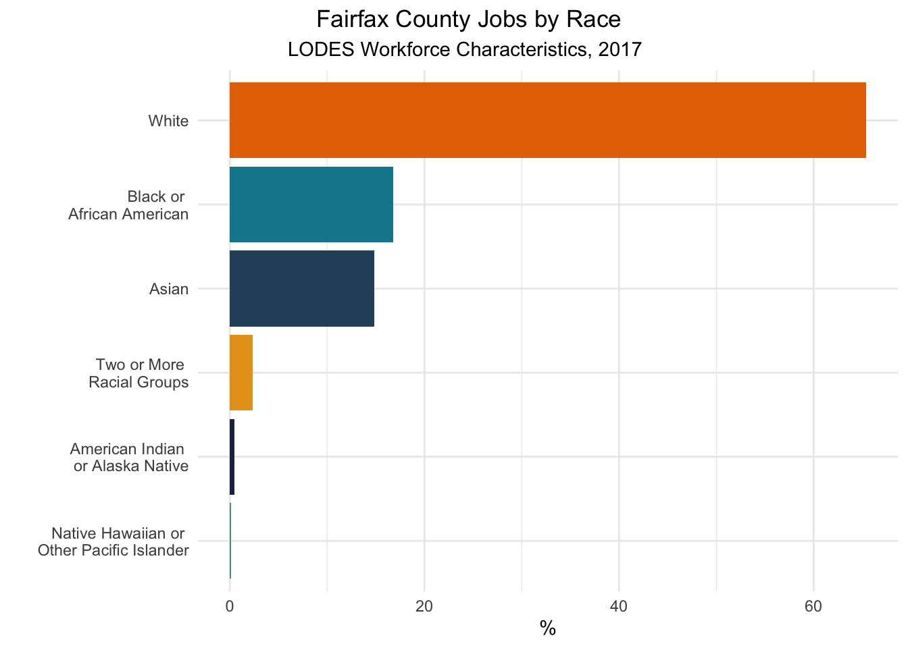
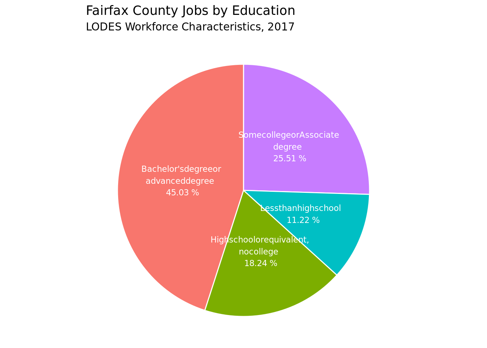
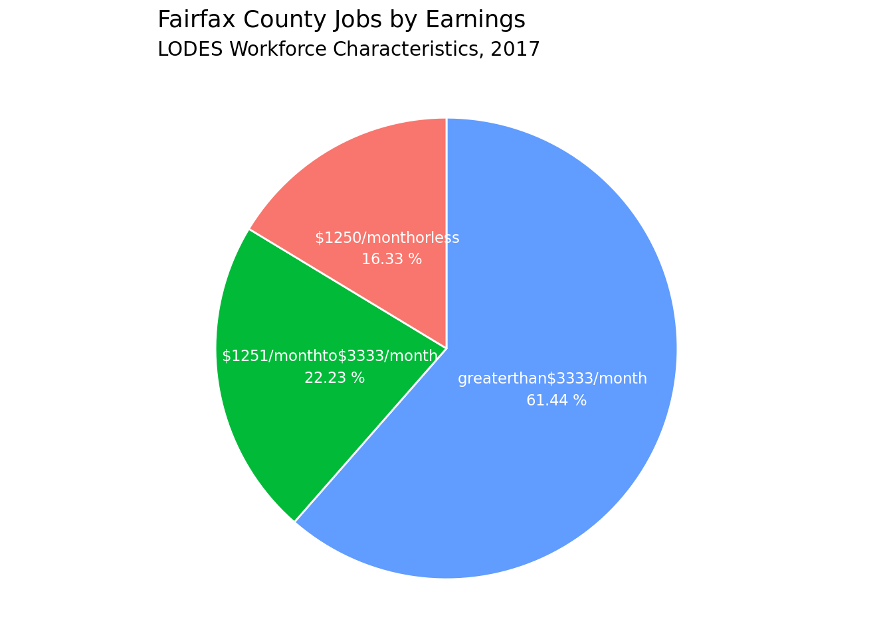
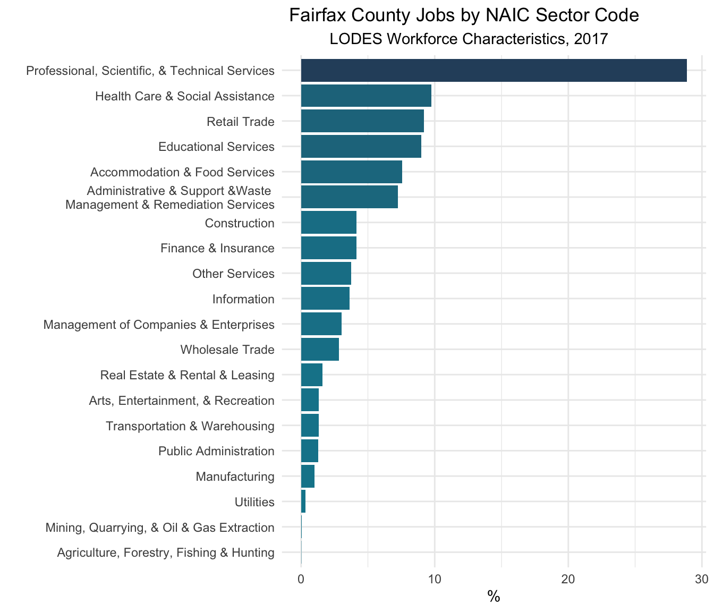

The Fairfax County Workforce
The page provides a demographic overview of Fairfax County workers.
eda geospatial interactive map socio-demographics sectorsApproach
This page characterizes the Fairfax County workforce. To do this, we used two datasets to better understand the population of individuals with job locations in Fairfax County. LEHD Origin-Destination Employment Statistics (LODES) data provide worker race, ethnicity, education, gender, and industry data at census block group level. We retrieved these characteristics from the 2017 LODES data, which we summarized at the workplace county level to provide an overview of Fairfax County's workforce. We supplement these LODES data with information from the American Community Survey (ACS). ACS is an annual survey conducted by the U.S. Census Bureau that provides 5-year estimates of population and housing characteristics. We used 2014/18 ACS ddata to supplement LODES with workplace Census tract data for workers' age and means of commuting to work.
Workers in Fairfax County
Overall, we find that Fairfax County employs primarily educated white-collar professional workers. Most workers employed in Fairfax County have jobs in professional, scientific, and technical services sectors. Almost half of the workforce obtained a bachelor's degree or more, and over half receive a salary of greater than $3,000 per month. The following plots provide additional information about the characteristics of workers employed in Fairfax County.
What is the Sociodemographic
Composition of Workers in Fairfax County?
Over 60% of workers in Fairfax County are white, while Black and Asian workers each comprise less than 20% of all workers in the county. Fairfax also has a small share of workers of Hispanic ethnicity, with approximately 12% of workers identifying as Hispanic. The county workforce is balanced in terms of gender with approximately 48% female and 53% male workers.

The following plot shows that the vast majority of workers in Fairfax County are not Hispanic or Latino, with only 12.13% identifying as such. However, when considering employment changes due to the pandemic, it is important to consider how this population will likely be disproportionately impacted. Underrepresented minorities have less access to jobs and poorer job security, which can leave them in a precarious position during pandemic uncertainty. Using this plot and the plot above, we can begin to understand how many workers are at particular risk for economic hardship.

The workforce breakdown by gender is relatively even and representative of the national breakdown.

How Educated are Workers in Fairfax County?
With 45% of workers having received a Bachelor’s degree or higher, we can say the workforce in Fairfax County is highly educated. This information is crucial for understanding employment opportunities in Fairfax. Highly education workers likely work in more white-collar occupations which have a much easier time transitioning to working from home than the retail or hospitality industries.

How Much do Workers in Fairfax County Earn?
The majority of workers earn in the top category of over $3,333 per month. Compared to the national average of worker salaries of $3,828 per month, this suggests that most workers in Fairfax County receive salaries close to or above the national average. This information is congruent with our finding that most Fairfax County workers are highly educated.

Which are the Most Prominent Sectors in Fairfax County?
This bar chart shows the number of jobs in Fairfax County by sectors. The sector that employs the most workers are professional, scientific, and technical services. This continues the idea that the Fairfax County workforce is generally highly educated and has opportunity to earn. Further, the majority of employment opportunities in this highly represented sector are unlikely to experience significant impacts from the pandemic. However, this does not suggest that the county will not experience any impacts; the second and third most-represented sectors are healthcare services and retail. Workers employed in healthcare and retail are more likely at risk for furloughs, unemployment, and income loss.

How do Workers Travel to Work?
The following maps provide more detail about the workforce in Fairfax County at workplace census tract level. The first tab provides maps of percent workers by means of transportation to work. Census tracts that workers primarily reach by driving will likely experience fewer covid-related disruptions, since workers can travel to their work locations in a "socially distant" way. Conversely, areas where people primarily carpooled or used public transit may be more vulnerable to return-to-work disruptions, and may have to navigate public transit restrictions, limitations, or shutdowns.
The second tab shows workplace census tracts by percent of workers in certain age brackets. For example, the map of percent workers age 60 to 64 highlights areas of Fairfax County in which a higher proportion of workers is likely to retire in the near term.